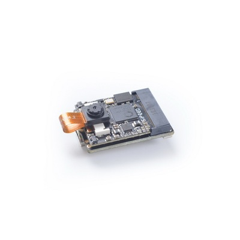

如何选购开发板
要开始使用 MaixPy, 必须需要一款 K210 开发板, 可以从 Sipeed 官方淘宝店获得心仪的硬件： Sipeed 官方淘宝店
1. 需要的硬件
1.1. 一款开发板
由于 MaixPy 早期产品线比较多，具体开发板及参数列表如下，用户可以根据自己的动手能力和需求选购对应开发板
MaixPy 系类开发板板载的 ROM 均为 16MB SPI FLASH, RAM: 6MB(通用) + 2MB(KPU 专用)
| MaixPy 系列开发板 | ||
|---|---|---|
| 描述 | 实物图 | 说明 |
| Maix Amigo |
 点击购买 Maix Amigo
点击购买 Maix Amigo
|
3.5寸 大屏幕， 预留三个 Grove 接口，三个 SPMOD 接口(其中一个为游戏手柄接口) |
| Maix Cube | 点击购买 Maix Cube | 迷你开发板，引出 Grove/Spmod 接口 |
| Maix Dock(M1W) |
 点击购买 Maix Dock(M1W)
点击购买 Maix Dock(M1W)
|
全引脚引出，采用 M1W 模块 (内部集成 ESP8285) |
| Maix Dock(M1) | 点击购买 Maix Dock(M1) | 全引脚引出，采用 M1 模块 |
| Maix Bit |
 点击购买 Maix Bit
点击购买 Maix Bit
|
全引脚引出，2x20pin，最小系统板 |
| Maix Duino |
 点击购买 Maix Duino
点击购买 Maix Duino
|
兼容 Arduino，支持 ESP32 WIFI，支持 ESP32 5个 ADC 通道的读取 |
| Maix GO | 点击购买 Maix GO | 已停产 |
| Maix Nano |
  点击购买 Maix Nano |
核心开发板 |
{kind=link}
{kind=link}
{kind=link}
{kind=link}
开发板详细资料请看 Wiki, 选择一款合适自己的开发板～
1.2. USB Type-C 连接线
{kind=link}
选用 Type-C 是因为它支持正反插，对开发十分友好
从淘宝官方购买可以询问是否附送，目前大部分安卓机也在使用 Type-C 连接线
1.3. 屏幕
从淘宝官方购买可以询问是否包含, 推荐用户购买带 LCD 的板子或者套餐,方便后续运行程序时结果的直观展示,
| 板型 | 屏幕驱动 IC | 屏幕分辨率 | 是否支持触摸 | 备注 |
|---|---|---|---|---|
| Maix Cube(IPS) | ST7789 | 240*240 | 不支持 | --- |
| Maix Amigo | ILI9486 | 320*480 | 支持(FT6X36) | --- |
| Maix Amigo(IPS 版) | ILI9486 | 320*480 | 支持(FT6X36) | --- |
| Maix Nano(不带屏幕) | --- | --- | --- | --- |
| Maix Dock | ST7789 | 320*240 | 不支持 | --- |
| Maix Bit | ST7789 | 320*240 | 不支持 | --- |
| Maix Dock | ST7789 | 320*240 | 不支持 | --- |
| Maix Go | ST7789 | 320*240 | 支持(FT6X36) | --- |
1.4. 摄像头
在售的有：OV2640（常规，M12）、OV7740、GC0328；
由于 K210 DVP 接口支持的分辨率为 VGA（640*480 30W）， 所以实际使用选取 30W 像素的摄像头即可。
截至 MaixPy 固件版本: MaixPy 0.5.0_160 ,支持的摄像头型号如下表
| 型号 | 设备 id | 像素 | 说明 | 备注 |
|---|---|---|---|---|
| OV2640 | 0x2642 | 200W | 支持度较好 | |
| OV7740 | 0x7742 | 30W | 支持度较好 | |
| OV3660 | 0x3660 | 300W | 兼容运行 | |
| GC0328 | 0x9d | 30W | 支持度较好 | |
| GC2145 | 0x2145 | 200W | 兼容运行 | |
| MT9D111 | 0x1519 | 200W | 可以运行，支持不完整 | |
| OV5640 | 0x5640 | 500W | 完整实现,支持自动变焦 | --- |
截止至固件版本 MicroPython v0.5.0-173 相关摄像头测试情况如下:
| 硬件型号 | 测试通过的单目或双目摄像头 |
|---|---|
| M1/M1W 模组系列（Maixduino、Dock、Go） | OV2640、GC0328、OV7740、GC2145、OV5640 |
| M1n 模组系列（Nano、Cube） | OV2640、GC0328、OV7740、GC2145、OV5640 |
| MaixBit | OV2640、GC0328、OV7740、GC2145、OV5640 |
| Maix Amigo | OV7740（后摄）、GC0328（前摄） |
- 目前摄像头的颜色模式
| YUV422 | RGB565 & YUV422 |
|---|---|
| OV2640 | OV5640 |
| OV7740 | GC2145 |
| GC0328 | --- |
从淘宝官方购买可以询问型号, OV7740 帧率相对高一点; OV2640 比较古老, 画质稍不如 GC0328
注：很多用户一上来就问哪款支持的帧率最高，其实帧率除了硬件上会有差异，而且在你使用的程序，由于程序的处理流程不同，帧率也是会有差异的，所以这里无法标注（以免误导用户）具体最高帧率。
1.5. Micro SD 卡 (TF 卡) (可选)
不使用 Micro SD 卡也是可以操作文件的, 在内部 Flash 上已经保留一部分来作为文件系统了, 只是 Flash 速度很慢！
为了方便图片文件快速操作, 可以选择购买一张 Micro SD 卡, MaixPy 内置了 SPI SD卡协议驱动,
购买时尽量选择速度快协议新的 Micro SD 卡, 比如 SD 2代协议, Class10 的内存卡
因为 K210 没有 SDIO 硬件外设, 所以使用了 SPI 来与 SD 卡通信, 当然, 市面上的 SD 卡品质参差不齐, SPI 模式不一定都能兼容, 尽量买正规的卡, 实在有需求请自行定制驱动～～
比如：下图左边两张卡 MaixPy 的驱动不支持, 中间和右边的都支持, 但是中间的 class10 卡速度最快(最高测过 128GB可用)
另外测试过网上购买的几张闪迪、金士顿、三星的卡, 其中发现有一张三星的卡无法使用
{kind=link}
1.6. ST-Link (用来给开发板 Maix Go 上的 STM32 更新固件) (可选)
如果购买的是 Maix Go, 上面集成了一颗 STM32 芯片, 用来模拟 USB转串口 工具, 以及模拟 JTAG, 如果想后期自行更新其固件, 建议购买一个 ST-Link 备用; 如果不需要JTAG 功能可以不用购买
1.7. JTAG 调试器 (可选)
- 注意：
!!! 烧录过 ken_gen.bin 之后将永久禁用 K210 的 JTAG 调试功能
K210 这款芯片支持 JTAG 调试, 如果需要调试功能, 需要使用 JTAG 调试器, 请在 Sipeed 官方淘宝店咨询购买。
如果是 Maix Go 开发板, 可以不用另外购买 JTAG 调试器, Maix Go 开发板上面集成了一个 STM32芯片, 可以模拟 JTAG(STM32 使用 CMSIS-DAP 或者 open-ec 固件), open-ec 固件目前还不支持, 后续会支持, 请以 open-ec github 项目主页说明为准